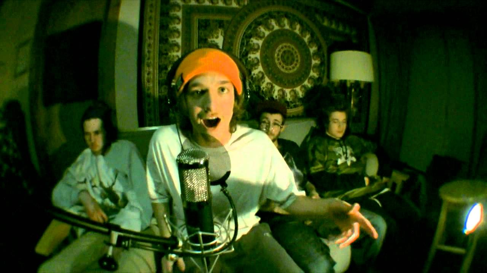

JARV's top 10
 |
POSITION: | 1 |
| TITLE: | Slack-Jaw | VIEWS: | 2 Mil |
| POSITION: | 2 | |
| TITLE: | Definition of a Rap Flow | VIEWS: | 1.7 Mil |
| POSITION: | 3 | |
| TITLE: | Escargot | VIEWS: | 1.5 Mil |
| POSITION: | 4 | |
| TITLE: | OH-LAWD | VIEWS: | 621k |
| POSITION: | 5 | |
| TITLE: | Bounce | VIEWS: | 546k |
| |
POSITION: | 6 |
| TITLE: | Roast Beef | VIEWS: | 511k |
| POSITION: | 7 | |
| TITLE: | Blaow | VIEWS: | 413k |
|  | POSITION: | 8 |
| TITLE: | Jarv hardly bargains | VIEWS: | 300k |
| POSITION: | 9 | |
| TITLE: | The Concoction | VIEWS: | ~200k |
| POSITION: | 10 | |
| TITLE: | MASTADON | VIEWS: | 56k |